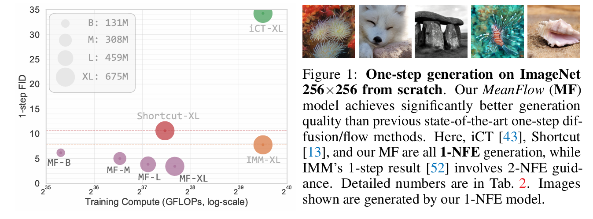

全文翻译
摘要
我们提出了一个用于单步生成建模的有原则且有效的框架。与Flow Matching方法所建模的瞬时速度不同，我们引入了平均速度的概念来刻画流场。我们推导了平均速度和瞬时速度之间明确的恒等式，并将其用于指导神经网络训练。我们的方法被称为MeanFlow模型，它是自包含的，不需要预训练、蒸馏或课程学习。MeanFlow在实验中表现出了强大的性能：在ImageNet 256×256上，从头开始训练的模型通过单次函数评估（1-NFE）实现了3.43的FID，显著优于之前最先进的单步扩散/流模型。我们的研究大幅缩小了单步扩散/流模型与其多步前身之间的差距，希望能激励未来的研究重新审视这些强大模型的基础。
1 介绍
生成建模的目标是将先验分布转换为数据分布。Flow Matching [28, 2, 30] 提供了一个直观且概念简单的框架，用于构建将一种分布传输到另一种分布的流路径。与扩散模型 [42, 44, 19] 密切相关，Flow Matching 专注于指导模型训练的速度场。自提出以来，Flow Matching 已在现代生成建模中得到广泛应用 [11, 33, 35]。
Flow Matching 和扩散模型在生成过程中都执行迭代采样。最近的研究非常关注少步（特别是单步前馈）生成模型。在这一方向上，先驱性的一致性模型 [46, 43, 15, 31] 对沿同一路径采样的输入的网络输出引入了一致性约束。尽管结果令人鼓舞，但一致性约束是作为网络行为的属性强加的，而本应指导学习的底层真实场的属性仍然未知。因此，训练可能不稳定，需要精心设计的“离散化课程” [46, 43, 15] 来逐步约束时间域。
在这项工作中，我们提出了一个有原则且有效的单步生成框架，称为 MeanFlow。核心思想是引入一个表示平均速度的新真实场，这与 Flow Matching 中通常建模的瞬时速度形成对比。平均速度定义为位移与时间间隔的比率，其中位移由瞬时速度的时间积分给出。仅从这个定义出发，我们推导出平均速度和瞬时速度之间明确的内在关系，该关系自然地作为指导网络训练的原则性基础。
基于这一基本概念，我们训练神经网络直接对平均速度场进行建模。我们引入了一个损失函数，促使网络满足平均速度和瞬时速度之间的内在关系。无需额外的一致性启发式方法。真实目标场的存在确保了最优解原则上独立于特定网络，这在实践中可导致更稳健和稳定的训练。我们进一步表明，我们的框架可以自然地将无分类器引导（CFG）[18] 纳入目标场，使用引导时在采样时不产生额外成本。
我们的 MeanFlow 模型在单步生成建模中表现出强大的实验性能。在 ImageNet 256×256 [7] 上，我们的方法使用1-NFE（函数评估次数）生成实现了3.43的FID。这一结果以50%至70%的相对优势显著优于同类中的先前最先进方法（图1）。此外，我们的方法是一个自包含的生成模型：它完全从头开始训练，无需任何预训练、蒸馏或课程学习。我们的研究在很大程度上缩小了单步扩散/流模型与其多步前身之间的差距，希望能启发未来的工作重新思考这些强大模型的基础。
|  |
|---|
| 图1：从零开始在ImageNet 256×256上的单步生成。我们的MeanFlow（MF）模型比以前最先进的单步扩散/流方法实现了明显更好的生成质量。这里，iCT[43]、Shortcut[13]和我们的MF都是1-NFE生成，而IMM的1步结果[52]涉及2-NFE引导。详细数字在表2中。显示的图像由我们的1-NFE模型生成。 |
2 相关工作
扩散与流匹配：在过去十年中，扩散模型[42,44,19,45]已发展成为生成建模的成功框架。这些模型通过逐步向干净数据添加噪声，并训练神经网络逆转这一过程，涉及求解随机微分方程（SDE），后被重新表述为概率流常微分方程（ODE）[45,22]。流匹配方法[28,2,30]通过建模定义分布间流路径的速度场扩展了这一框架，也可视为连续时间标准化流的一种形式[36]。
少步扩散/流模型：从实践和理论角度看，减少采样步数已成为重要考量。一种方法是将预训练的多步扩散模型蒸馏为少步模型，如[39,14,41]或分数蒸馏[32,50,53]。早期少步模型训练探索[46]基于蒸馏方法发展，而一致性模型[46]作为独立生成模型无需蒸馏，通过对不同时间步的网络输出施加一致性约束，促使其沿轨迹产生相同端点，相关研究已探索多种一致性模型和训练策略[46,43,15,31,49]。
近期工作中，一些方法聚焦于用两个时间相关变量刻画扩散/流相关量。如[3]将流图定义为两时间步间流的积分，并开发多种匹配损失用于学习；相比之下，本文基于的平均速度对应位移。Shortcut模型[13]在流匹配基础上引入自一致性损失，捕捉不同离散时间间隔的流关系；归纳矩匹配[52]则对不同时间步的随机插值器自一致性进行建模。
3 背景：流匹配
流匹配[28,30,1]是一类生成模型，通过学习匹配概率分布间的流（以速度场表示）。形式上，给定数据$x\sim p_{\text{data}}(x)$和先验$\epsilon\sim p_{\text{prior}}(\epsilon)$，流路径可构造为$z_t = a_t x + b_t \epsilon$（$t$为时间），速度$v_t$定义为$v_t = z_t’ = a_t’ x + b_t’ \epsilon$（’表示时间导数），在[28]中称为条件速度，记为$v_t = v_t(z_t|x)$（图2左）。常用调度为$a_t=1-t$、$b_t=t$，此时$v_t=\epsilon-x$。
| 图2：流匹配中的速度场[28]。左图：条件流[28]。给定的$z_t$可能源自不同的$(x, \epsilon)$对，从而产生不同的条件速度$v_t$。右图：边际流[28]，通过对所有可能的条件速度进行边缘化得到。边际速度场作为网络训练的底层真实场。此处展示的所有速度本质上都是瞬时速度。插图参考[12]。（灰色点：来自先验的样本；红色点：来自数据的样本。） |
由于给定$z_t$及其$v_t$可能来自不同$x$和$\epsilon$，流匹配本质上对所有可能情况的期望建模，称为边际速度[28]（图2右）：
由$\theta$参数化的神经网络$v_\theta$用于拟合边际速度场，损失函数为：
但因式(1)的边缘化操作难以直接计算，[28]提出改用条件流匹配损失：
其中目标$v_t$为条件速度，最小化$L_{\text{CFM}}$等价于最小化$L_{\text{FM}}$[28]。
给定边际速度场$v(z_t, t)$，通过求解$z_t$的ODE生成样本：
初始条件为$z_1 = \epsilon\sim p_{\text{prior}}$，解可写为$z_r = z_t - \int_r^t v(z_\tau, \tau)d\tau$（$r$为另一时间步）。实际中通过离散时间步数值近似，如欧拉法：$z_{t_{i+1}} = z_{t_i} + (t_{i+1}-t_i)v(z_{t_i}, t_i)$，也可应用高阶求解器。
值得注意的是，即使条件流设计为直线（“整流”）[28,30]，边际速度场（式(1)）通常会诱导弯曲轨迹（图2）。这种非直线性不仅源于神经网络近似，更来自底层真实边际速度场。对弯曲轨迹采用粗离散化时，数值ODE求解器会导致结果不准确。
4 MeanFlow模型
4.1 平均流
我们方法的核心思想是引入表示平均速度的新场，而流匹配中建模的速度为瞬时速度。
平均速度：定义为两时间步$t$和$r$间的位移（通过积分获得）除以时间间隔，形式上平均速度$u$为：
为强调概念差异，全文用$u$表示平均速度，$v$表示瞬时速度。$u(z_t, r, t)$是依赖$(r,t)$的场（图3）。本质上，平均速度$u$是瞬时速度$v$的泛函：$u = F[v] \triangleq \frac{1}{t-r}\int_r^t vd\tau$，它由$v$诱导，与神经网络无关。从概念上看，如同瞬时速度$v$在流匹配中作为真实场，本文框架中的平均速度$u$为学习提供了底层真实场。
| 图3：平均速度场 $u(z, r, t)$。最左侧：尽管瞬时速度 $v$ 决定了路径的切线方向，但由式（3）定义的平均速度 $u(z, r, t)$ 通常与 $v$ 不共线。平均速度与位移方向一致，位移量为 $(t-r) u(z, r, t)$。右侧三个子图：场 $u(z, r, t)$ 同时依赖于 $r$ 和 $t$，此处展示了 $t=0.5$、$0.7$ 和 $1.0$ 时的情况。 |
根据定义，$u$的场满足特定边界条件和“一致性”约束（扩展[46]的术语）。当$r\to t$时，$\lim_{r\to t}u = v$；此外，自然满足一种“一致性”：在$[r,t]$上的大步长与在$[r,s]$和$[s,t]$上的两个连续小步长一致，这是因为$(t-r)u(z_t, r, t) = (s-r)u(z_s, r, s) + (t-s)u(z_t, s, t)$，直接由积分的可加性$\int_r^t vd\tau = \int_r^s vd\tau + \int_s^t vd\tau$推导而来。因此，准确近似真实$u$的网络应天然满足一致性关系，无需显式约束。
MeanFlow模型的最终目标是用神经网络$u_\theta(z_t, r, t)$近似平均速度。显著优势在于：若能准确近似该量，可通过$u_\theta(\epsilon, 0, 1)$的单次评估近似整个流路径。即该方法更适用于单步或少步生成，因推理时无需像建模瞬时速度那样显式近似时间积分（实验也将验证）。但直接用式(3)定义的平均速度作为网络训练的真实目标不可行，因训练中需计算积分。关键洞见在于：可通过操作平均速度的定义式构造优化目标，即使仅已知瞬时速度，也能用于训练。
MeanFlow恒等式：将式(3)改写为
将$r$视为与$t$独立，对两边关于$t$求导：
左边用乘积法则，右边用微积分基本定理。整理得恒等式：
称为“MeanFlow恒等式”，描述$v$与$u$的关系，可证明式(6)与式(4)等价（附录B.3）。
式(6)右侧为$u(z_t, r, t)$的“目标”形式，用于构造损失函数训练神经网络。为使目标适用，需进一步分解时间导数项，如下所述。
计算时间导数：式(6)中$\frac{d}{dt}u$为全导数，可展开为偏导数：
由$\frac{dz_t}{dt}=v(z_t, t)$（式(2)）、$\frac{dr}{dt}=0$、$\frac{dt}{dt}=1$，得$u$与$v$的另一关系：
表明全导数由$[\partial_z u, \partial_r u, \partial_t u]$（$u$的雅可比矩阵）与切向量$[v, 0, 1]$的雅可比向量积（JVP）给出，现代库（如PyTorch的torch.func.jvp或JAX的jax.jvp）可高效计算。
基于平均速度的训练：至此，公式与网络参数化无关。现引入模型学习$u$：参数化网络$u_\theta$，促使其满足MeanFlow恒等式（式(6)），具体最小化目标：
其中$u_{\text{tgt}} = v(z_t, t) - (t-r)(v(z_t, t)\partial_z u_\theta + \partial_t u_\theta)$。$u_{\text{tgt}}$作为有效回归目标，由式(6)驱动，仅用瞬时速度$v$作为真实信号，无需积分计算。目标中的导数项（$\partial u$）由参数化对应项（$\partial u_\theta$）替代。损失函数中，对目标$u_{\text{tgt}}$应用停止梯度（sg）操作[46,43,15,31,13]，避免通过雅可比向量积的“双重反向传播”，规避高阶优化。若$u_\theta$损失为零，易证其满足MeanFlow恒等式（式(6)）及原始定义（式(3)）。
式(10)中的速度$v(z_t, t)$为流匹配中的边际速度[28]（图2右），按[28]用条件速度（图2左）替代，目标变为：
其中$v_t = a_t’x + b_t’\epsilon$为条件速度[28]，默认$v_t = \epsilon - x$。
最小化式(9)损失的伪代码见算法1。本质上，方法与流匹配类似，关键差异是匹配目标由$- (t-r)(v_t\partial_z u_\theta + \partial_t u_\theta)$修正，源于对平均速度的考量。特别地，若限制$t=r$，第二项消失，方法完全匹配标准流匹配。
算法1中，JVP操作高效：通过JVP计算$\frac{d}{dt}u$仅需一次反向传播，类似神经网络标准反向传播。因$\frac{d}{dt}u$是目标$u_{\text{tgt}}$的一部分且对$\theta$停止梯度，神经网络优化（对$\theta$）的反向传播将$\frac{d}{dt}u$视为常数，不产生高阶梯度计算。JVP仅引入一次额外反向传播，成本与反向传播相当，JAX实现中开销小于总训练时间的20%（附录）。
采样：MeanFlow模型采样简单，用平均速度替代时间积分：
单步采样时，$z_0 = z_1 - u(z_1, 0, 1)$，其中$z_1 = \epsilon\sim p_{\text{prior}}(\epsilon)$，伪代码见算法2。尽管本文主要关注单步采样，需强调给定此式，少步采样也很直接。
与先前工作的关系：虽与先前单步生成模型[46,43,15,31,49,23,13,52]相关，但方法提供了更有原则的框架。核心是两个底层场$v$和$u$间的函数关系，自然导出$u$必须满足的MeanFlow恒等式（式(6)），该恒等式不依赖神经网络引入。相比之下，先前工作通常依赖对神经网络行为强加的额外一致性约束。一致性模型[46,43,15,31]聚焦于锚定在数据侧的路径（本文记号中，对应对任意$t$固定$r\equiv0$），因此仅依赖单个时间变量，而本文方法依赖两个时间变量。Shortcut[13]和IMM[52]模型也依赖两个时间变量，引入额外的两时间自一致性约束。相比之下，本文方法仅由平均速度定义驱动，训练用的MeanFlow恒等式（式(6)）由该定义自然推导，无额外假设。
4.2 带引导的MeanFlow
我们的方法自然支持无分类器引导（CFG）[18]。与在采样时简单应用CFG（这会使函数评估次数NFE翻倍）不同，我们将CFG视为底层真实场的固有属性。这种公式设计使我们能够在享受CFG优势的同时，在采样时保持1-NFE的特性。
真实场构造：我们构造一个新的真实场 $v^{\text{cfg}}$：
其中$v(z_t, t|c)$是类条件速度场，$v(z_t, t)$是类非条件速度场，两者的线性组合由引导系数$\omega$控制：
这里$v_t$是条件速度[28]（在此上下文中更准确地称为样本条件速度）。遵循平均流的核心思想，我们引入与$v^{\text{cfg}}$对应的平均速度场$u^{\text{cfg}}$，根据平均流恒等式（式(6)），$u^{\text{cfg}}$满足：
需注意，$v^{\text{cfg}}$和$u^{\text{cfg}}$是不依赖于神经网络的底层真实场。进一步结合$v(z_t, t) = v^{\text{cfg}}(z_t, t)$和$v^{\text{cfg}}(z_t, t) = u^{\text{cfg}}(z_t, t, t)$的关系（推导自式(16)），可将式(13)改写为：
带引导的模型训练：基于式(15)和式(16)，我们通过神经网络$u_\theta^{\text{cfg}}$参数化$u^{\text{cfg}}$，并构造训练目标函数：
其中目标值$u_{\text{tgt}}$定义为：
而$\tilde{v}_t$是融合类条件和非条件信息的速度项：
这里$v_t = \epsilon - x$是样本条件速度，当$\omega = 1$时，损失函数退化为无CFG的情况（式(9)）。
为使网络$u_\theta^{\text{cfg}}$适应类非条件输入，我们按[18]的做法以10%的概率随机丢弃类标签。此外，通过引入混合系数$\kappa$（见附录B.1），可进一步将类条件和非条件的$u^{\text{cfg}}$输出融合到目标函数中，从而优化引导效果。
单NFE采样与CFG集成：在我们的框架中，$u_\theta^{\text{cfg}}$直接建模由$v^{\text{cfg}}$诱导的平均速度场，因此采样时无需额外计算。单步生成仅需调用$u_\theta^{\text{cfg}}(\epsilon, 0, 1)$一次（算法2），保持1-NFE特性。与传统CFG需两次函数评估（分别计算类条件和非条件输出）不同，我们的方法通过训练阶段的目标设计，将引导信息嵌入平均速度场，实现了采样效率与生成质量的平衡。
4.3 设计决策
损失度量：在式(9)中，损失度量采用L2平方损失。遵循[46,43,15]，我们研究了不同的损失度量。一般来说，损失函数形式为$L = |\Delta|_2^{2\gamma}$，其中$\Delta$表示回归误差。可证明（见[15]），最小化$|\Delta|_2^{2\gamma}$等价于使用“自适应损失权重”最小化L2平方损失$|\Delta|_2^2$。具体而言，权重设置为$w = 1/(|\Delta|_2^2 + c)^p$，其中$p = 1-\gamma$且$c>0$（如$10^{-3}$）。自适应加权损失为$\text{sg}(w) \cdot L$，其中$L = |\Delta|_2^2$。若$p=0.5$，则类似于[43]中的伪Huber损失。我们在实验中比较了不同的$p$值。
采样时间步$(r, t)$：我们从预定义分布中采样两个时间步$(r, t)$，研究了两种分布类型：（i）均匀分布$u(0,1)$；（ii）对数正态（lognorm）分布[11]，即先从正态分布$N(\mu, \sigma)$中采样，再通过逻辑函数映射到$(0,1)$。采样得到的配对中，较大的值赋给$t$，较小的值赋给$r$，并设置一定比例的随机样本满足$r=t$。
基于$(r, t)$的条件化：我们使用位置嵌入[48]对时间变量进行编码，然后将其组合作为神经网络的条件输入。需要注意的是，尽管场由$u_\theta(z_t, r, t)$参数化，但网络不一定需要直接以$(r, t)$为条件。例如，可让网络以$(t, \Delta t)$为条件，其中$\Delta t = t-r$，此时$u_\theta(\cdot, r, t) \triangleq \text{net}(\cdot, t, t-r)$，其中$\text{net}$为网络。JVP计算始终相对于函数$u_\theta(\cdot, r, t)$。我们在实验中比较了不同的条件化形式。
5 实验
5.1 消融研究
| 表1：ImageNet 256×256的1-NFE生成消融研究。评估FID-50K。默认配置以灰色标记：B/4主干，从头开始训练80轮。 |
我们在表1中研究了模型的特性，分析如下：
从流匹配到平均流。我们的方法可以看作是目标经过修改的流匹配（算法1），当r始终等于t时，它简化为标准的流匹配。表1a比较了随机采样r≠t的比例。0%的r≠t比例（简化为标准流匹配基线）在1-NFE生成时无法产生合理的结果。非零的r≠t比例使MeanFlow能够生效，在1-NFE生成下产生有意义的结果。我们观察到，模型在学习瞬时速度（r=t）和通过修改后的目标传播到r≠t之间取得平衡。这里，25%的比例实现了最佳的FID，100%的比例也产生了有效的结果。
JVP计算。式（8）中的JVP操作是连接所有(r,t)坐标的核心关系。在表1b中，我们进行了破坏性比较，故意执行不正确的JVP计算。结果表明，只有当JVP计算正确时，才能获得有意义的结果。值得注意的是，沿着∂zu的JVP切线是d维的，其中d是数据维度（这里是32×32×4），而沿着∂ru和∂tu的切线是一维的。然而，这两个时间变量决定了场u，因此即使它们只是一维的，它们的作用也是至关重要的。
基于(r,t)的条件。如4.3节所讨论的，我们可以通过各种形式的显式位置嵌入来表示uθ(z,r,t)，例如uθ(·,r,t)≜net(·,t,t−r)。表1c比较了这些变体。表1c显示，所有研究的(r,t)嵌入变体都产生了有意义的1-NFE结果，证明了MeanFlow作为一个框架的有效性。嵌入(t,t−r)，即时间和间隔，取得了最佳结果，而直接嵌入(r,t)的表现几乎一样好。值得注意的是，即使只嵌入间隔t−r也能产生合理的结果。
时间采样器。先前的工作[11]已经表明，用于采样t的分布会影响生成质量。我们在表1d中研究了用于采样(r,t)的分布。注意，(r,t)首先被独立采样，然后通过后处理步骤通过交换来强制t>r，然后将r≠t的比例限制为指定的比例。表1d报告说，对数正态采样器表现最好，这与流匹配中的观察结果一致[11]。
损失度量。据报道[43]，损失度量的选择对少步/单步生成的性能有很大影响。我们在表1e中研究了这一方面。我们的损失度量是通过带幂次p的自适应损失加权实现的（4.3节）。表1e显示，p=1时取得了最佳结果，而p=0.5（类似于[43]中的伪Huber损失）也表现得很有竞争力。标准的L2平方损失（这里p=0）与其他设置相比表现不佳，但仍然产生了有意义的结果，这与[43]中的观察结果一致。
引导尺度。表1f报告了使用CFG的结果。与多步生成中的观察结果一致[34]，CFG在我们的1-NFE设置中也显著提高了生成质量。我们强调，我们的CFG公式（4.2节）自然支持1-NFE采样。
可扩展性。图4展示了MeanFlow在更大的模型尺寸和不同训练持续时间下的1-NFE FID结果。与基于Transformer的扩散/流模型（DiT[34]和SiT[33]）的行为一致，MeanFlow模型在1-NFE生成方面表现出了有希望的可扩展性。
 |
|---|
| 图4：MeanFlow模型在ImageNet 256×256上的可扩展性。报告了1-NFE生成的FID值。所有模型均从头开始训练。在应用CFG的同时保持了1-NFE采样特性。我们的方法在模型规模方面展现出了良好的可扩展性。 |
5.2 与先前工作的比较
ImageNet 256×256的比较。在图1中，我们与之前的单步扩散/流模型进行了比较，这些模型也总结在表2（左）中。总体而言，MeanFlow在其类别中大大优于之前的方法：它实现了3.43的FID，与IMM的单步结果7.77[52]相比，相对改进超过50%；如果我们只比较1-NFE（而不仅仅是单步）生成，MeanFlow与之前的最先进技术（10.60，Shortcut[13]）相比有近70%的相对改进。我们的方法大大缩小了单步和多步扩散/流模型之间的差距。
在2-NFE生成中，我们的方法实现了2.20的FID（表2，左下）。这个结果与多步扩散/流模型的领先基线相当，即DiT[34]（FID 2.27）和SiT[33]（FID 2.15），两者在相同的XL/2骨干下的NFE为250×2（表2，右）。我们的结果表明，少步扩散/流模型可以与它们的多步前身相媲美。正交的改进，如REPA[51]，是适用的，留待未来的工作。
| 表2：ImageNet-256×256上的类条件生成结果。所有条目在适用情况下均报告了使用无分类器引导（CFG）的结果。左表：从头开始训练的1-NFE和2-NFE扩散/流模型。右表：作为参考的其他生成模型家族。在两个表中，“×2”表示CFG导致每个采样步骤的函数评估次数（NFE）为2。我们的MeanFlow模型均训练240个轮次，除了“MeanFlow-XL+”模型，其训练轮次更多，并采用为长期训练选择的配置，具体见附录。†：iCT [43]的结果由[52]报告。 |
值得注意的是，我们的方法是自包含的，完全从头开始训练。它在不使用任何预训练、蒸馏或[43,15,31]中采用的课程学习的情况下取得了强劲的结果。
CIFAR-10的比较。我们在表3中报告了CIFAR-10[25]（32×32）上的无条件生成结果。FID-50K是通过1-NFE采样报告的。所有条目都使用与[44]开发的相同的U-net[38]（约55M），直接应用于像素空间。所有其他竞争对手都使用EDM风格的预处理器[22]，而我们的没有预处理器。实现细节在附录中。在这个数据集上，我们的方法与先前的方法具有竞争力。
| 表3：CIFAR-10无条件生成结果。 |
6 结论
我们提出了MeanFlow，这是一种用于单步生成的有原则且高效的框架。从广义上讲，本文考虑的场景与物理学中的多尺度模拟问题相关，这些问题可能涉及空间或时间上的一系列尺度、长度和分辨率。进行数值模拟本质上受到计算机解析尺度范围能力的限制。我们的公式涉及在粗粒度级别描述底层物理量，这是许多物理学重要应用的共同主题。我们希望这项工作能在生成建模、模拟和相关领域的动力系统研究之间架起桥梁。
附录
A 实现细节
ImageNet 256×256：我们使用标准VAE标记器提取潜在表示。潜在空间尺寸为32×32×4，作为模型输入。主干架构遵循DiT[34]，基于ViT[9]并采用adaLN-Zero[34]进行条件化。为对两个时间变量（如$(r, t)$）进行条件化，我们对每个时间变量应用位置嵌入，随后通过2层MLP处理并求和。我们保持DiT架构模块不变，而架构改进是正交且可行的。具体配置见表4。
| 表4：ImageNet 256×256的配置。B/4是我们的消融模型。 |
CIFAR-10：我们在CIFAR-10上进行无条件生成实验，实现遵循标准流匹配实践[29]。模型输入为像素空间的32×32×3。网络采用基于[44]开发的U-net[38]（约55M），这是其他对比基线常用的架构。我们对两个时间变量（此处为$(t, t−r)$）应用位置嵌入并拼接作为条件化输入，不使用任何EDM预处理器[22]。
训练使用Adam优化器，学习率0.0006，批量大小1024，(β₁, β₂)=(0.9, 0.999)， dropout 0.2，权重衰减0，EMA衰减率0.99995。模型训练800K次迭代（含10K次预热[16]）。(r, t)采样器为lognorm(–2.0, 2.0)，r≠t采样比例75%，自适应加权幂次p=0.75。数据增强设置遵循[22]，禁用垂直翻转和旋转。
B 额外技术细节
B.1 MeanFlow的改进CFG
在4.2节中，我们讨论了如何自然扩展方法以支持CFG，唯一需要的修改是通过式(19)修订目标。我们注意到式(19)中仅呈现了类非条件的$u^{\text{cfg}}$。在原始CFG[18]中，混合类条件和类非条件预测是标准做法，通过随机丢弃实现。我们观察到类似思路也可应用于我们的回归目标。
形式上，引入混合尺度κ并将式(16)重写为：
此处κ的作用是在右侧与$u^{\text{cfg}}(\cdot|c)$混合。利用$v(z_t, t) = v^{\text{cfg}}(z_t, t)$和$v^{\text{cfg}}(z_t, t) = u^{\text{cfg}}(z_t, t, t)$的关系（推导式(16)时已使用），可证明式(20)满足原始CFG公式（式(13)），且有效引导尺度为$\omega’ = \frac{\omega}{1-\kappa}$。据此，式(19)重写为：
损失函数与式(17)定义相同。
表5探索了引入κ的影响，其中固定有效引导尺度$\omega’=2.0$并变化κ。结果表明，通过κ混合可进一步提升生成质量。需注意，主文表1f的消融未包含此改进（即κ=0）。
| 表5：MeanFlow的改进CFG。κ如式(20)所定义，其目的是使类条件$u^{cfg}(\cdot \mid c)$和类非条件$u^{cfg}(\cdot)$都出现在目标中。在本表中，我们将有效引导尺度$\omega’$（由$\omega’ = \omega / (1 - \kappa)$给出）固定为2.0。因此，对于不同的κ值，我们通过$\omega = (1 - \kappa) \cdot \omega’$来设置ω。如果κ=0，则退回到式(19)中的CFG情况（另见表1f）。与标准CFG随机丢弃类条件的做法类似[18]，我们观察到在目标中混合类条件和类非条件$u^{cfg}$可提高生成质量。 |
B.2 损失度量
L2平方损失为$L = |\Delta|_2^2$，其中$\Delta = u_\theta - u_{\text{tgt}}$为回归误差。通常可采用幂次L2损失$L_\gamma = |\Delta|_2^{2\gamma}$，γ为用户指定超参数。最小化该损失等价于最小化自适应加权L2平方损失（见[15]）：其梯度可视为对L2平方损失$(|\Delta|_2^2)$乘以损失自适应权重$\lambda \propto |\Delta|_2^{2(\gamma-1)}$。实际中，我们遵循[15]采用权重：
其中$p=1-\gamma$，$c>0$为避免除零的小常数。若$p=0.5$，则类似于[43]中的伪Huber损失。自适应加权损失为$\text{sg}(w) \cdot L$，其中$\text{sg}$表示停止梯度操作。
B.3 MeanFlow恒等式的充分性
主文中，从定义式(4)推导了MeanFlow恒等式(6)，表明“式(4)⇒式(6)”，即式(6)是式(4)的必要条件。下面证明其也是充分条件，即“式(6)⇒式(4)”。
一般而言，导数相等不直接蕴含积分相等（可能相差常数）。在本文中，该常数可抵消。考虑“位移场”$S$：
若将$S$视为任意函数，导数相等仅能保证积分相等（差常数）：
但$S$的定义要求$t=r$时$S=0$，且$t=r$时$\int_r^t vd\tau=0$，故$C_1=C_2$，即“式(6)⇒式(4)”。
该充分性源于对平均速度$u$的建模，而非直接建模位移$S$。若强制位移的导数相等（如$\frac{d}{dt}S = v$），则无法自动满足$S|_{t=r}=0$，需额外边界条件。本文公式可自动满足该条件。
B.4 雅可比向量积（JVP）计算分析
尽管JVP计算在某些方法中可能是关注点，但本文中开销极低。由于计算的积（雅可比矩阵与切向量的乘积）需停止梯度（式(10)），在基于θ的SGD反向传播中被视为常数，不增加θ反向传播的开销。
因此，计算该乘积的额外开销仅为JVP操作的“反向”传递。这一反向传递与神经网络优化（关于θ）的标准反向传播类似——事实上，在JAX[4]等深度学习库中，使用相似接口计算标准反向传播（关于θ）。本文中，其开销甚至低于标准反向传播，因仅需反向传播至输入变量，而非参数θ，故开销很小。
我们在消融模型B/4上对JVP开销进行基准测试，使用JAX在v4-8 TPU上实现。将MeanFlow与流匹配对比，唯一开销来自JVP的反向传递；注意JVP的前向传递是标准前向传播，流匹配（或任何典型目标函数）同样需要。基准测试显示，流匹配训练耗时0.045秒/迭代，MeanFlow为0.052秒/迭代，仅增加16%的时间开销。
C 定性结果
图5展示了使用1-NFE模型（MeanFlow-XL/2，FID 3.43）在ImageNet 256×256上的类条件生成示例。
 |
|---|
| 图5：1-NFE生成结果。我们展示了使用我们的1-NFE模型（MeanFlow-XL/2，FID 3.43）在ImageNet 256×256上进行类条件生成的精选示例。 |